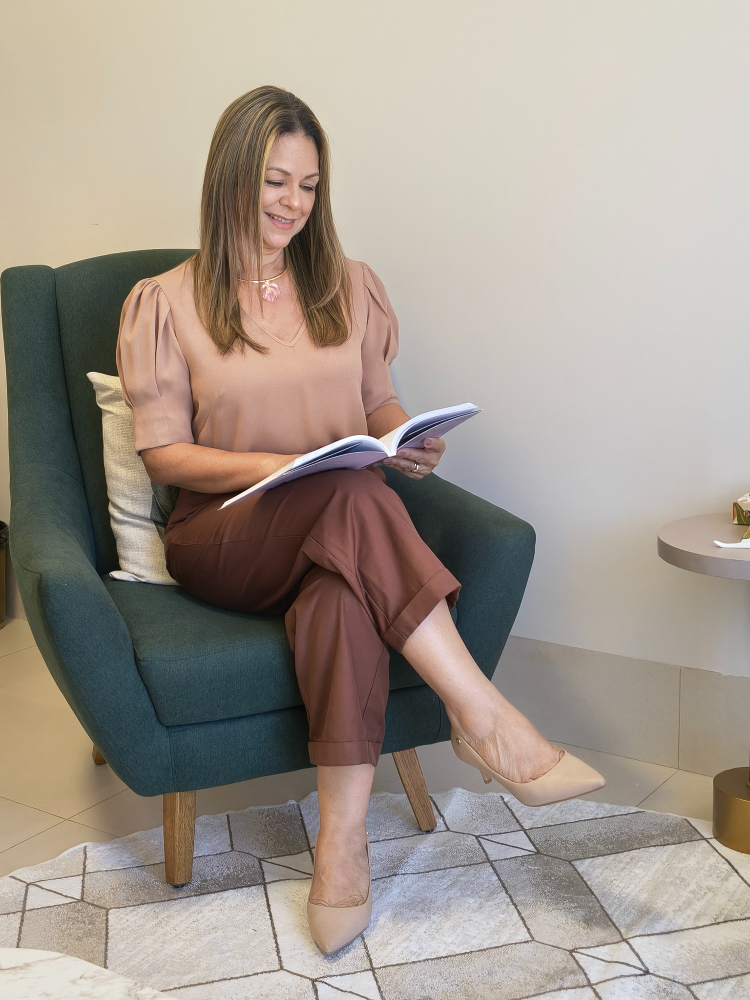
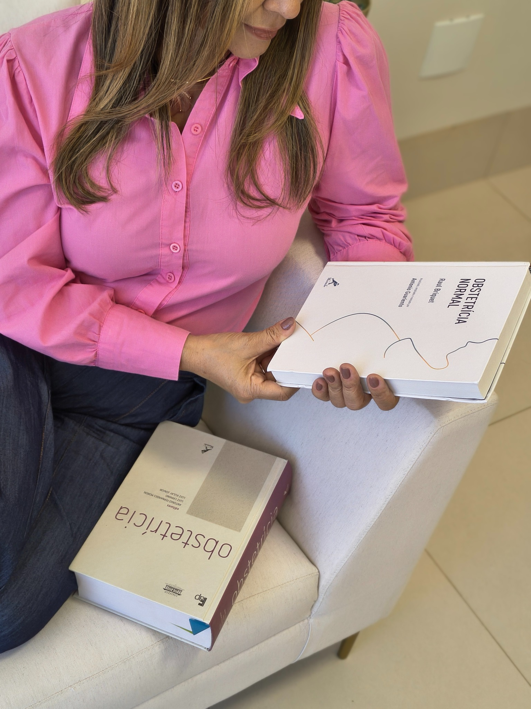
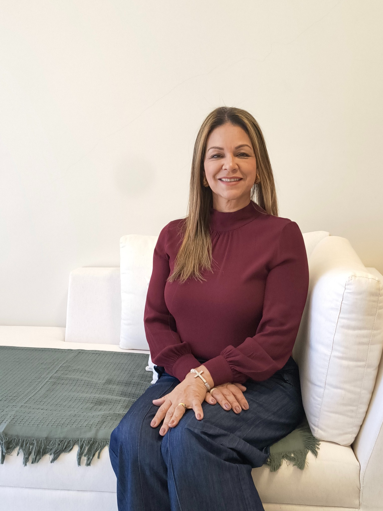

Ansiedade e pensamentos acelerados
Quando as preocupações ocupam espaço demais e tornam difícil descansar, decidir ou estar presente.
Psicóloga clínica e obstétrica CRP 18/06601
Um espaço seguro para compreender o que você sente, cuidar da sua saúde emocional e atravessar mudanças com mais consciência e gentileza.


Escuta, vínculo e cuidadopara o seu momento
Talvez você esteja aqui porque...
Nem sempre é fácil nomear o que sentimos. Às vezes, o primeiro passo é reconhecer que não precisamos lidar com tudo sozinhas.
Quando as preocupações ocupam espaço demais e tornam difícil descansar, decidir ou estar presente.
Quando as responsabilidades se acumulam e parece não existir tempo ou espaço para cuidar de si.
Para acolher medos, expectativas, transformações e tudo aquilo que nem sempre encontra lugar para ser dito.
Em fases de luto, conflitos, baixa autoestima ou quando você apenas sente que precisa de ajuda.

Psicoterapia individual
A psicoterapia é um processo construído com tempo, confiança e escuta. Juntas, podemos compreender o que você está vivendo e encontrar formas mais possíveis de se relacionar consigo e com a sua história.
Psicologia obstétrica e perinatal
Gestação, parto, pós-parto e maternidade podem reunir alegria, medo, culpa, dúvidas e mudanças profundas. Ter um espaço seguro para falar sobre tudo isso também é uma forma de cuidado.
Acolhimento emocional durante a gestação
Preparação emocional para o parto
Cuidado no puerpério e na maternidade

“Cuidar da saúde emocional também faz parte deste novo ciclo.”

Prazer, eu sou a Rosiméry
Meu trabalho é oferecer um espaço de escuta respeitosa, acolhimento e reflexão para que você compreenda melhor o que está vivendo e construa caminhos possíveis.
Minha trajetória inclui formação e atuação voltadas à saúde emocional da mulher, com atenção especial às experiências da gestação, parto, puerpério e maternidade.
O primeiro passo pode ser simples
Conte, do seu jeito, o que está buscando. Não precisa preparar um texto ou saber explicar tudo.
Conversamos sobre disponibilidade, modalidade e as informações necessárias para começar.
Você passa a ter um espaço reservado para ser ouvida e olhar para si com mais cuidado.
Antes de começar
Se ainda restar alguma pergunta, você pode falar diretamente comigo pelo WhatsApp.
Sim. O atendimento online oferece mais flexibilidade e os detalhes são alinhados no primeiro contato.
Em Primavera do Leste/MT. O endereço e as orientações são enviados após o agendamento.
Não. Você pode começar por aquilo que está difícil agora. Compreender o que acontece faz parte do processo.
Use qualquer botão de WhatsApp desta página. A disponibilidade e os próximos passos serão combinados por lá.
Seu próximo passo
Você não precisa esperar chegar ao limite para procurar ajuda. Se fizer sentido, podemos começar conversando.
Falar pelo WhatsApp